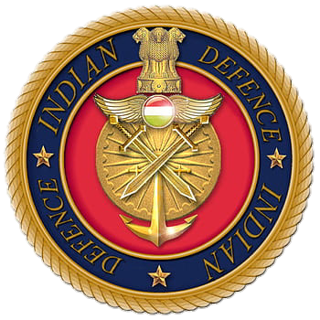

Indian Defence Forces

The Indian Armed Forces are the military forces of the Republic of India. It consists of three professional uniformed services: the Indian Army, Indian Navy, and Indian Air Force.Additionally, the Indian Armed Forces are supported by the Central Armed Police Forces, Indian Coast Guard and Special Frontier Force and various inter-service commands and institutions such as the Strategic Forces Command, the Andaman and Nicobar Command and the Integrated Defence Staff. The President of India is the Supreme Commander of the Indian Armed Forces but the executive authority and responsibility for national security is vested
in the Prime Minister of India and their chosen Cabinet Ministers. The Indian Armed Forces are under the management of the Ministry of Defence of the Government of India. With strength of over 1.4 million active personnel,it is the world's second-largest military force and has the world's largest volunteer army. It also has the third-largest defence budget in the world The Global Firepower Index report lists it as the fourth most-powerful military.
The Indian Armed Forces have been engaged in a number of major military operations, including: the Indo-Pakistani wars of 1947, 1965 and 1971, the Portuguese-Indian War, the Sino-Indian War, the 1967 Cho La incident, the 1987 Sino-Indian skirmish, the Kargil War, and the Siachen conflict among others. India honours its armed forces and military personnel annually on Armed Forces Flag Day, 7 December. Armed with the nuclear triad,the Indian armed forces are steadily undergoing modernisation, with investments in areas such as futuristic soldier systems and missile defence systems.
The Department of Defence Production of the Ministry of Defence is responsible for the indigenous production of equipment used by the Indian Armed Forces. It comprises 16 Defence PSUs. India remains one of the largest importer of defence equipment with Russia, Israel, France and the United States being the top foreign suppliers of military equipment. The Government of India, as part of the Make in India initiative, seeks to indigenise manufacturing and reduce dependence on imports for defence.